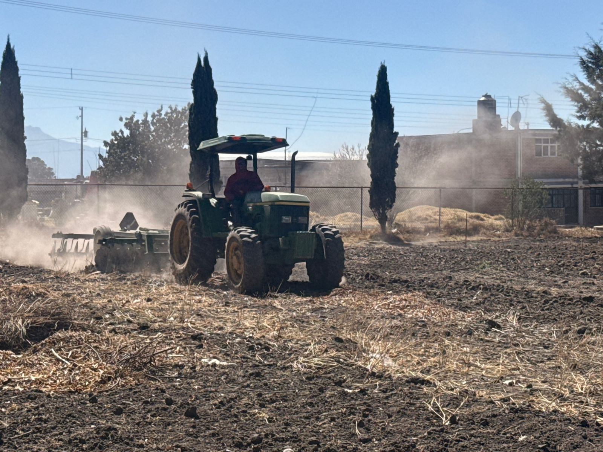

| Actividad | Fecha | Observaciones |
|---|---|---|
| Limpieza del terreno | Día 1 | Se retiró basura, piedras y hierba seca del área de siembra. |
| Preparación del terreno con maquinaria | Día 2 | Se utilizó una máquina para rascar y aflojar la tierra, facilitando la preparación del suelo. |
| Formación de surcos | Día 3 | Se organizaron los espacios donde se sembrarán las semillas. |
| Cuidado de árboles de durazno | Día 4 | Se revisó y se dará mantenimiento a la línea de árboles de durazno para asegurar su buen crecimiento. |


La limpieza y preparación del terreno, así como el cuidado de los árboles de durazno, son actividades importantes para mantener un espacio agrícola saludable y productivo.